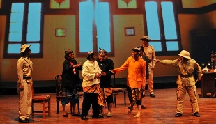

Ludruk
Ludruk
Ludruk adalah suatu kesenian drama tradisional dari Jawa Timur. Ludruk merupakan suatu drama tradisional yang diperagakan oleh sebuah grup kesenian yang dipergelarkan di sebuah panggung dengan mengambil cerita tentang kehidupan rakyat sehari-hari, cerita perjuangan, dan sebagainya yang diselingi dengan lawakan dan diiringi dengan gamelan sebagai musik. Dialog/monolog dalam ludruk bersifat menghibur dan membuat penontonnya tertawa, menggunakan bahasa khas Surabaya, meski kadang-kadang ada bintang tamu dari daerah lain seperti Jombang, Malang, Madura, Madiun dengan logat yang berbeda. Bahasa lugas yang digunakan pada ludruk, membuat dia mudah diserap oleh kalangan nonintelek (tukang becak, peronda, sopir angkutan umum, dan lain-lain).
Sebuah pementasan ludruk biasa dimulai dengan Tari Remo dan diselingi dengan pementasan seorang tokoh yang memerankan "PakSakera", seorang jagoan Madura. Kartolo adalah seorang pelawak ludruk legendaris asal Surabaya, Jawa Timur. Ia sudah lebih dari 40 tahun hidup dalam dunia seni ludruk. Nama Kartolo dan suaranya yang khas, dengan banyolan yang lugu dan cerdas, dikenal hampir di seluruh Jawa Timur, bahkan hingga Jawa Tengah.
Ludruk berbeda dengan ketoprak dari Jawa Tengah. Cerita ketoprak sering diambil dari kisah zaman dulu (sejarah maupun dongeng), dan bersifat menyampaikan pesan tertentu. Sementara ludruk menceritakan cerita hidup sehari-hari (biasanya) kalangan wong cilik.
Sumber : https://id.wikipedia.org/wiki/Ludruk